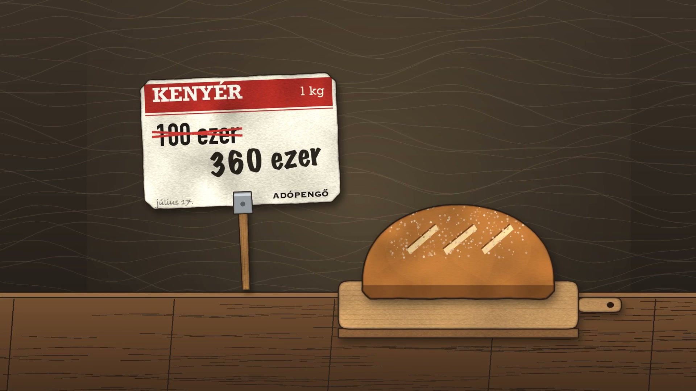

Magyarország, 1946: mennyit ért a fizetésed, mire hazaértél vele?
Egy nemzetközi táblázat szerint 1946 júliusában 15 óránként duplázódtak az árak, egy 2022-es magyar újraszámítás szerint viszont az infláció nagyságrendekkel kisebb volt. A fizetés sorsa két pénzen és egy éjszakán múlt.

1946. július 11-én bekerült a forgalomba az utolsó pengő-bankjegy, a százmillió bilpengős. Ha pengőben írták volna ki az értékét, egy egyes és húsz nulla állt volna rajta. Danyi Pál korabeli forrásokból gyűjtött adatai szerint a Népszava aznap 12 millió bilpengőbe került. Másnap 32 millióba.
Tegyük fel, hogy ezen a nyáron reggel pengőben kapod meg a fizetésedet. Elképzelt helyzet, egyetlen valódi ember története sem áll mögötte, csak egy szám. Egy 2012-es nemzetközi táblázat szerint 1946 júliusában Magyarországon 15 óránként duplázódtak az árak, vagyis a fizetésed 15 óra múlva már csak a felét érte volna. Ez a szám kizárólag arra az egy hónapra szól, és ma már vitatott: egy 2022-es magyar újraszámítás szerint a júliusi infláció nagyságrendekkel kisebb volt. A kérdésre azért lehet mégis válaszolni, mert a fizetés sorsa azon is múlt, melyik pénzben kapta az ember. 1946 nyarán ugyanis már kettő volt belőle.
Romok, csere, nullák
Az induló helyzetet a Magyar Nemzeti Bank szakértői egyetlen mondatba sűrítették: „A háborúban elpusztult, kifosztott és jóvátételi kötelezettségekkel sújtott Magyarország mindennapi életét leginkább a pengő hiperinflációja tette kiszámíthatatlanná.” A nemzetközi táblázat ennek kezdetét 1945 augusztusára teszi. Az emberek még abban az évben másik utat találtak: uralkodóvá vált a cserekereskedelem, amellyel kikerülték a pénz használatát.
A bankjegyeken közben szaporodtak a nullák. A pengő mellé új címletnevek kerültek, a milpengő és a bilpengő. Az utóbbi egybillió pengőt ért, vagyis egy egyest tizenkét nullával. A legnagyobb címletet, az egymilliárd bilpengőst legyártották, 1946. június 3-i dátummal, de a forint bevezetése miatt soha nem került forgalomba. Pengőben kiírva egy egyes után 21 nulla állt volna rajta. Egy példánya ma a Pénzmúzeum gyűjteményében van.
A második pénz
Az állam közben egy másik mércét épített a pengő mellé. 1946. január 1-jén a kormány bevezette az adópengőt, egy értékálló számolási pénzt, hogy az adókat és a betéteket ebben számolják. Eleinte csak számolási egység volt, a pengőben mért értékét naponta közölt index mutatta. Május 29-től papírpénzként, adójegyként is megjelent. Június második felétől az állam már ebben fizetett, júliusban a béreket is egyre inkább adópengőben állapították meg, és július 9-től törvényes fizetőeszköz lett a pengő mellett.
A borítékra lefordítva ez azt jelenti, hogy aki az államtól kapta a fizetését, az nyár közepétől már nem pengőt vitt haza. Ezzel a gond csak enyhült: a fizetés adópengőben is veszített az értékéből, csak lassabban.
Hogy a pengőnek mi maradt, azt az árak mutatják. Danyi adatai szerint az utolsó bankjegy kibocsátása körül egy kiló újburgonya 900 millió bilpengőbe került, egy dollárért pedig 200 darabot kellett összeszedni ebből a bankjegyből. Ugyanő írja, hogy július 17-én a kenyér hatósági ára egy nap alatt 100 ezerről 360 ezer adópengőre nőtt. Pengőben számolva egy kiló kenyérért 432 darabot kellett volna leszámolni a legnagyobb forgalomba került bankjegyből, egyetlen napilapért pedig 50-et. Július közepére a pengős bankjegyekért már szinte semmit nem lehetett venni. Aki tehette, kis megtakarítása egy részét azonnal aranyba vagy dollárba tette.

Két számítás, nyolc nagyságrend
A 15 órás duplázódás Steve Hanke és Nicholas Krus 2012-es táblázatában szerepel. Itt Magyarország áll az első helyen: 1946 júliusában egyetlen hónap alatt 4,19 × 10¹⁶%-kal nőttek az árak. Zimbabwe 2008-as csúcsa ugyanebben a táblázatban 24,7 órás duplázódással szerepel, tehát lassabb.
Danyi Pál 2022-ben a Központi Statisztikai Hivatal folyóiratában, a Statisztikai Szemlében számolta újra a magyar adatokat, és több ponton is megkérdőjelezi ezt a képet. A fizetés szempontjából kettő számít. Az első a szám eredete. Azt írja, hogy Hanke ugyanezt az értéket már egy 2009-es, Kwokkal közös cikkében közölte, Nogaro 1948-as tanulmányára hivatkozva, abban a tanulmányban azonban a szám nem szerepel. Azt, hogy a szám nincs a tanulmányban, második forrásból nem tudtuk megerősíteni, ezért Danyi állításaként közöljük. Ugyanez az érték Paal 2000-es táblázatában Cagan 1956-os eredményeként is szerepel, így a hivatkozás hibája a szám eredetét nem zárja le.
A második pont közelebb visz a fizetéshez. Danyi szerint július második felében a pengő zuhanása csak papíron történt: egy olyan pénzt értékeltek le naponta, amelyet az emberek már nem használtak, a tényleges infláció ekkor adópengőben jelentkezett. Hasonlóan látta Paal 2000-es, Danyitól független tanulmánya: szerinte július második felében az inflációt leginkább adópengő-inflációként érdemes érteni. A nemzetközi táblázat egy általános, minden országra vonatkozó jegyzetben maga is jelzi, hogy a feltüntetett pénznem nem feltétlenül az egyetlen, amely az adott helyen forgalomban volt.
A 2012-es táblázatban a magyar 1946. júliusi érték a legmagasabb havi infláció, a 2022-es magyar újraszámítás szerint viszont Zimbabwe megelőzte.
Danyi számítása szerint az 1946. júliusi átlagos infláció 4,39 × 10⁸% volt, vagyis 439 millió százalék. Ez is felfoghatatlanul nagy szám, de nyolc nagyságrenddel kisebb a táblázaténál. Hanke és Kwok adataira építve Danyi szerint Zimbabwe mindkét számítási mód szerint magasabbra jutott: naptári hónapra számolva 2008 októberében 690 millió százalék a magyar 439 millióval szemben, napokra számítva 2008. november 14-én 79,6 milliárd százalék a magyar 2,815 milliárddal szemben. Így a magyar júliusi adat már nem világcsúcs.
Ezért a Valóban? oldalán Vitatott jelölést kapott az az állítás, hogy 1946 júliusában Magyarországon 15 óránként duplázódtak az árak: két számítás két választ ad. Hogy július második felében a tényleges infláció adópengőben zajlott, azt két, egymástól független tanulmány is alátámasztja. Danyi konkrét havi értékének viszont nem találtunk független párját: Paal például más mércével számol, és júliusra más számokat kap. Ha a régi szám gyengesége igazolódik is, az új attól még egyetlen szerző számítása. Így a pontos mondat kétfelé ágazik. A 2012-es táblázatban a magyar 1946. júliusi érték a legmagasabb havi infláció, a 2022-es magyar újraszámítás szerint viszont Zimbabwe megelőzte.
Az éjszaka, amely kimaradt a statisztikából
Akárhogy számoljuk, július végére a pengős bankjegyekért már semmit nem lehetett venni. Az újságok július 28-án, vasárnap közölték az átváltási arányokat, a rendelet másnap jelent meg a Magyar Közlönyben, augusztus 1-jei hatállyal. Egy másik, szintén július 28-i rendelet így nevezte meg az új pénzt: „Az új érték aranyérték, számolási egysége: a forint.” Egy forint 200 millió adópengőt ért, pengőben pedig egy négyest és utána 29 nullát. Biztosítékként az Egyesült Államok által visszaadott, mintegy 30 tonnás magyar aranykészlet szolgált. Kezdetben egymilliárd forintot bocsátottak ki, szándékosan kevesebbet a lehetségesnél, hogy féken tartsák az inflációt.
Az átállásnak azonban volt egy rejtett része is. A villamos átszállójegy július 31-én 1 millió adópengőbe került, augusztus 1-jén 90 fillérbe, ami 180 millió adópengőnek felelt meg. Ez 180-szoros áremelés egyetlen éjszaka alatt. A kenyér hatósági ára július utolsó napján 100 millió adópengő volt, másnap 96 fillér, vagyis 192 millió adópengő.
Az 1946. augusztus 1-jére virradó éjszaka áremelését a régi pénzben már nem, az újban még nem jegyezték, így Danyi szerint gyakorlatilag kimaradt minden statisztikából.
Ezek hatósági árak voltak. Danyi becslése szerint azon az éjszakán a fogyasztói árak összességében legalább 50–100%-kal emelkedtek, miközben az előző napokban a szabadpiaci árak még csökkentek. Danyi szerint erről még az Országos Árindexmegállapító Bizottság és a Magyar Gazdaságkutató Intézet adatsoraiban sincs pontos számítás, és független forrást mi sem találtunk. Danyi szerint az áremelést elsősorban a hatósági árak okozták, a mértékét pedig valószínűleg azért nem hozták nyilvánosságra, hogy ne sokkolják a lakosságot. Az 1946. augusztus 1-jére virradó éjszaka áremelését a régi pénzben már nem, az újban még nem jegyezték, így Danyi szerint gyakorlatilag kimaradt minden statisztikából.
Mennyit ért tehát a fizetésed?
1946 júliusában, ha pengőben kaptad, szinte semmit. Ha az állam fizetett, már adópengőben kaptad, és az is olvadt, csak lassabban. Hogy az árak pontosan milyen gyorsan szaladtak, arra két számítás két választ ad, és ezt a vitát ez a cikk sem tudja lezárni.
Augusztus elején, forintban, a háború előtti fizetésed körülbelül felét. Az MNB szakértői szerint átlagosan ennyit értek a bérek reálértéken, és ugyanők írják, hogy „a stabil pénz fedezete mellett megszűnt az áruhiány és a gyors drágulás”. Danyi úgy fogalmaz, hogy a forint megjelenése „gyakorlatilag azonnal lenullázta az inflációt”.
A forintos fizetés kevés volt, de estére is ugyanannyit ért, mint reggel, és ez egy éve hiányzott.
 Videón is megnézhetedMagyarország, 1946: mennyit ért a fizetésed, mire hazaértél vele?
Videón is megnézhetedMagyarország, 1946: mennyit ért a fizetésed, mire hazaértél vele?
Források
- Danyi Pál (2022): Statisztikai Szemle 100/12, 1106–1148. o., KSH
- Hanke, S. H. – Krus, N. (2012): World Hyperinflations, Cato Working Paper no. 8, táblázat (tükör)
- Hanke – Kwok (2009): Cato Journal 29(2)
- Horváth K. – Horváth Z. – Újszászi R.: Már hetven éve forinttal fizetünk, MNB
- Botos János (2016): A pengő megsemmisülése, a forint születése, 1938–1946. Múltunk 2016/1
- Paal, B. (2000): Measuring the Inflation of Parallel Currencies, SIEPR Discussion Paper 00-01
- Garami Erika (2021): 75 éves a forint. Budapesti Levéltári Mozaikok 2021/21
- Pénzmúzeum: Egymilliárd b.-pengő
- 9000/1946. (VII. 28.) ME rendelet
- Fortepan 30232, Wikimedia Commons, CC BY-SA 3.0
A cikk a videó állítástáblájára épül, és külön tény-, nyelvi és jogi bírálaton ment át. A kivágott képek az eredeti licencük alatt használhatók tovább. Hogyan ellenőrzünk?
Hibát találtál? Írd meg nekünk, megnézzük.